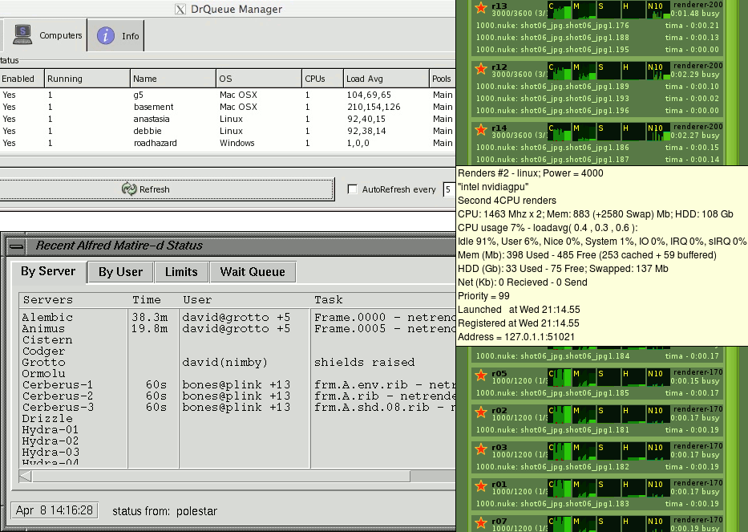
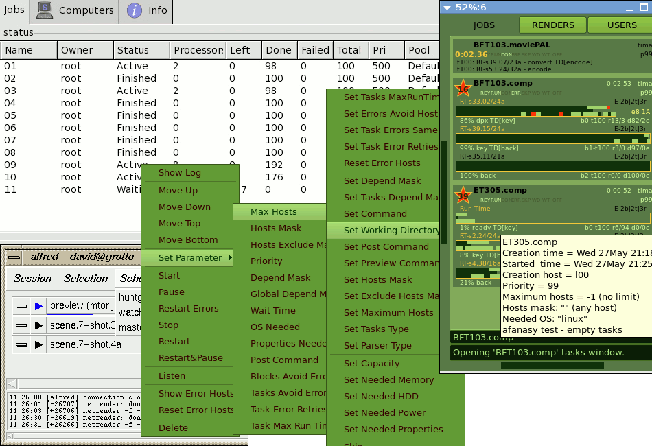

|
|
|
|
|  |
Диспетчер сетевых вычислений нужен для управления рендер фермой. Под управлением фермой подразумевается всё то, что происходит между постановкой задачи пользователем до появления конечного результата. От нажатия кнопки "Отсчитать Удалённо" в любимой программе до появления всей секвенции картинок в нужной папке.
Диспетчеры бывают совсем разные от простейших, до целых готовых решений которые управляют целой студией с технической точки зрения. И услуги они предлагают они разные как пользователям так и администраторам.
Вообще задача посчитать на 2ух компьютерах быстрее чем на одном, на 20-ти ещё быстрее чем на 2ух - называется масштабируемостью. И обычно она совсем не простая. Не мало математиков и программистов над ней постоянно работают в разных областях, так как в общем случае очень сложно получить прирост производительности с увеличением количества вычислителей. Но нам (людям работающим в области компьютерной графики) повезло, нашу задачу обычно легко разбить на независимые подзадачи - кадры, и поставить считаться одновременно разные кадры на разных компьютерах. С такой задачей справляется даже человек, как я уже говорил выше.
А простейшая программа диспетчер, с которым я работал - это Frame Booster (lightstorm3d.com - Free - последний релиз 29-Dec-2002). Это вообще плагин для Maya (точнее для Maya 4.0 NT - да, когда-то было именно так). Обмен и хранение информацией между клиентами, которые одновременно были и серверами, происходил через расшаренную папку. Запускался ScriptJob, который каждый интервал времени следил за появлением там специальных фалов, читал их и писал свои (зачем собственно нужен был сам плагин я так и не понял, всю работу выполняли MEL скрипты). Для работы он брал около 10% процессора причём всегда, даже когда ничего не делал. Подтормаживала Maya, если в ней одновременно работать. Частенько всё подвисало. Но всё же пользоваться им было удобнее, чем распределять кадры вручную.
Другой простой диспетчер, который я пощупал, был DrQueue (drqueue.org - Free - версия 0.64 с 2005 года, обрастает только скриптами для запуска из разных софтов). Это уже "настоящий" диспетчер, отдельные самостоятельные программы сервера и клиента, написанные на Cи. Но он тоже по сути "простейший". Задача там представляет собой одну командную стоку, а с какого по какой кадр считать указывается с помощью переменных среды (evironment variabes). Сервер запускает эту команду на клиентах с разными значениями этих переменных. Кстати лимит на количество задач там от того, что сервер просто объявляет массив на 100 статичных структур задач. Соотношение возможности/простота у него, наверное, максимальное. Он очень прост, я считаю гораздо проще Frame Booster-а, но намного его функциональнее, надежнее и удобнее.
Далее идёт ещё много менеджеров, но по сути ничего не меняется. Все они распределяют кадры между клиентами.
Ещё один менеджер, по-моему самый популярный в наших конторах (и не только в "наших"), это Alfred. Некоторые ошибочно думают, что он работает только с RenderMan-ом. Он может всё. Задача там это скрипт, в котором описан набор подзадач и зависимости между ними. Т.е. по сути ему совсем всё равно что делать. Там можно поставить любую "мудрёную" задачу, которая, например, сначала что-то забейкает, потом сгенерит рибы (риб - это такой универсальный формат описания 3д сцены, которую надо посчитать), потом посчитает тени, а потом уже займётся картинками. Его можно "научить" запускать Houdini, Mantra, MentalRay, Maya, Max, Nuke, After Effects и вообще любую задачу, которую можно сформулировать с помощью командной строки.
Я не зря привёл в пример эти 3 менеджера. Это популярные и типичные представители развития диспетчеров. Простейший диспетчер - это как плагин (или некоторое дополнение) к определённой программе, а иногда часть её, как у Digital Fusion. Он работает только с ней, и врятли вы заставите его сделать что-либо другое. Но пользователям таких менеджеров обычно иного и не надо. Средний диспетчер это отдельное приложение - сервер и клиент программы. В общем он может делать что-угодно, но задача должна сводиться к командной строке с подстановкой к ней различных чисел - начального и конечного кадра. И последний тип - это менеджер, который в принципе может делать что угодно. Подзадачи там могут быть совершенно разные - совсем разные командные строки, и может быть описана практически любая зависимость между этими подзадачами.
Существует ещё немало менеджеров, которых можно рассматривать как плагины, но ко многим программам. Они обычно хорошо справляются с тем, что в них зашили разработчики. Но шаг в право, шаг в лево там либо обойдётся очень дорого, либо вообще не возможен. Развиваются они в основном в сторону поддержки новых функций, появившихся в новых версиях всё большего количества поддерживаемых программ.
Некоторые современные диспетчеры по мимо собственно распределения просчётов предоставляют ещё ряд сопутствующих услуг. Эволюционируют ещё и в этом направлении. Например они сами проверяют битая ли картинка или нет, проверяют все ли картинки из секвенции с определённым начальным и конечным кадров присутствуют в указанной директории. Могут копировать текстуры и другие используемые файлы с локального компьютера на файловый сервер перед просчётом. Могут рендерить сначала во временные папки локально на рендер-нодах, а потом собирать их воедино в нужный каталог на файловом сервере. "Мапят" сетевые диски на MS Windows. В общем занимаются техническим администрированием студии.
Рассмотрением таких услуг я заниматься не буду. По моему личному опыту, серьёзные фирмы сами себя администрируют, а мелким это особо и не нужно. Да и я лично вообще не очень понимаю, зачем изучать все скриптовые возможности диспетчера, когда можно изучить, например, Python, и делать в принципе что угодно, а не только то, что есть у дичпетчера. А со стратегической точки зрения я бы вообще предостерёг студию от "подсаживания" pipe-line на платный, не open-source продукт. Гораздо лучше подсесть на какой-нибудь Python, и прочие бесплатные языки и программы с открытым исходным кодом, их у вас никто не отберёт. А наличие специальных лицензий, навсегда исключит возможность их производителей диктовать вам какие-либо условия.
А что же такое диспетчер и как их можно сравнивать, если от него отбросить всё связанное с администритованием, pipe-line-ом, возможностями связанными с конкретными программами, типа бейкать оклюжн и так далее? Это я и постараюсь объяснить.
|  |

|
|

|